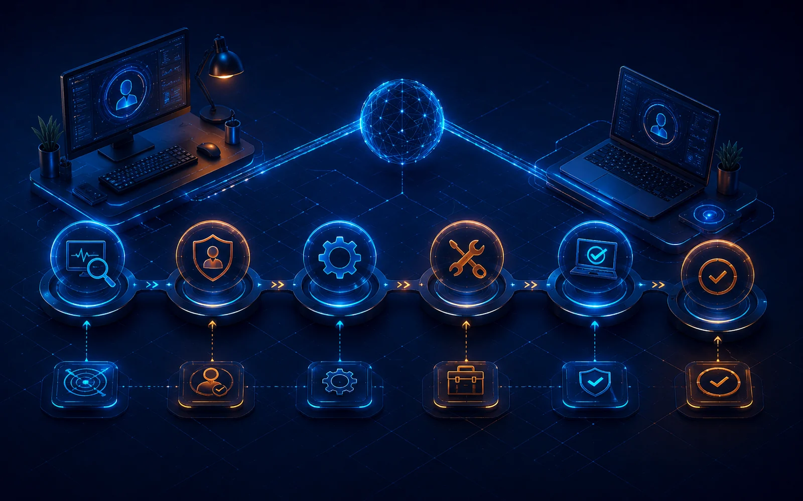
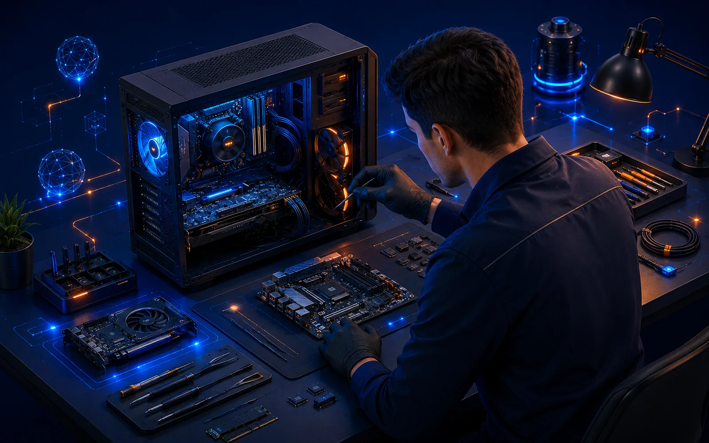

Blog académico
Entradas del proyecto Fénix Labs organizadas como una revista de soporte técnico: identidad, normas, políticas, protocolos, documentos, herramientas y atención presencial.
Presentación del proyecto
Datos académicos, identidad, slogan, mascota, redes simuladas y soporte a distancia.
Ir al artículoNormas de atención
Reglas de conducta para técnicos, clientes y usuarios durante el soporte.
Ir al artículoPolíticas de soporte
Alcances, límites, privacidad, soporte telefónico y soporte a distancia.
Ir al artículo
Protocolo remoto
Protocolo, diagrama de flujo, hoja de servicio y registro de caso para soporte remoto.
Ir al artículoContrato y confidencialidad
Contrato informático, acuerdo de confidencialidad, responsabilidades y modelo resumido.
Ir al artículoHerramientas remotas
Comparativa de TeamViewer, AnyDesk, Supremo, RustDesk y Chrome Remote Desktop.
Ir al artículo
Soporte presencial
Proceso de mantenimiento, instalación, redes, diagnóstico físico y entrega.
Ir al artículo